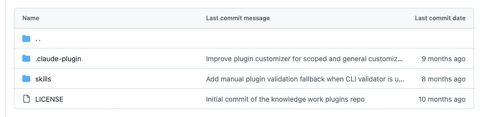

Người quản lý plugin là người dựng và chỉnh bộ công cụ AI cho cả nhóm: tạo plugin mới cho một quy trình chưa có ai làm sẵn, hoặc sửa plugin có sẵn cho khớp với công cụ và cách làm của tổ chức mình. Nhóm kỹ năng cowork-plugin-management của Anthropic để Claude dẫn các bạn đi qua hai việc đó bằng hội thoại.
Plugin cowork-plugin-management có 2 kỹ năng, chúng mình đếm từ thư mục skills của kho gốc. Mô tả trong README gốc: tạo plugin mới hoặc chỉnh plugin có sẵn theo công cụ và quy trình riêng của tổ chức. Cả hai kỹ năng đều ghi rõ yêu cầu chạy trong ứng dụng Cowork trên máy tính (desktop app).

Cài đặt
Cách 1: Claude Cowork
- NGƯỜI: vào claude.com/plugins và cài plugin
cowork-plugin-management. README gốc hướng dẫn cài plugin cho Cowork ở trang này.
Cách 2: Claude Code
- NGƯỜI: mở terminal, chạy hai lệnh sau, chép đúng từ README của kho gốc. Lệnh đầu thêm kho plugin của Anthropic, lệnh thứ hai cài nhóm quản lý plugin.
claude plugin marketplace add anthropics/knowledge-work-plugins claude plugin install cowork-plugin-management@knowledge-work-plugins
- TỰ ĐỘNG: sau khi cài, plugin tự kích hoạt. README gốc ghi: kỹ năng tự chạy khi đúng việc, và lệnh gõ tắt dùng được ngay trong phiên làm việc.
- NGƯỜI: kiểm đã cài chưa. Gõ
/plugin, mở thẻ Installed và tìmcowork-plugin-management. Theo Docs, các bạn cũng có thể gõ/rồi tìm kỹ năng của plugin dưới dạng/cowork-plugin-management:<tên-kỹ-năng>.
Muốn tắt hoặc gỡ plugin, chạy một trong hai lệnh sau:
claude plugin disable cowork-plugin-management@knowledge-work-plugins claude plugin uninstall cowork-plugin-management@knowledge-work-plugins
Nối công cụ: thư mục của plugin này không có file CONNECTORS.md và không có cấu hình nối công cụ riêng, nên các bạn không cần nối gì để bắt đầu. Khi chỉnh một plugin khác, kỹ năng cowork-plugin-customizer có thể tìm trong các nguồn đã nối của các bạn (chat, tài liệu, email) để lấy tên công cụ và quy ước của tổ chức. Nếu chưa nối nguồn nào, kỹ năng sẽ hỏi trực tiếp các bạn.
Lưu ý về môi trường: cả hai kỹ năng ghi yêu cầu ứng dụng Cowork trên máy tính. Kỹ năng chỉnh plugin còn tự báo lỗi và dừng nếu phiên làm việc chạy trên container từ xa, vì không thấy thư mục plugin.
Cách gọi kỹ năng
Có hai cách, theo README gốc và Docs của Claude Code.
- Nói việc bằng lời thường. Các bạn cứ kể việc cần làm, kỹ năng tự chạy khi đúng việc.
- Gọi thẳng bằng lệnh gõ tắt
/cowork-plugin-management:<tên-kỹ-năng>. Theo Docs, kỹ năng của plugin luôn có tên dạng/tên-plugin:tên-kỹ-năng. Ví dụ:/cowork-plugin-management:create-cowork-pluginđể bắt đầu dựng một plugin mới./cowork-plugin-management:cowork-plugin-customizerđể chỉnh một plugin đã có.
Các kỹ năng trong nhóm
/cowork-plugin-management:cowork-plugin-customizer: chỉnh một plugin cho khớp với công cụ và quy trình của tổ chức, hoặc thiết lập lần đầu một plugin mẫu. Kỹ năng tìm thông tin trong chat, tài liệu, email đã nối, lập danh sách việc cần đổi, hỏi những chỗ chưa rõ, gợi ý nối thêm công cụ rồi đóng gói thành file.pluginđể cài. Câu gọi mẫu: "Chỉnh plugin bán hàng này cho đội mình dùng HubSpot và kênh #sales-team."/cowork-plugin-management:create-cowork-plugin: dẫn các bạn tạo một plugin mới từ đầu qua năm bước: tìm hiểu nhu cầu, lên danh sách thành phần, thiết kế chi tiết, làm ra các file, rồi rà lại và đóng gói thành file.plugin. Câu gọi mẫu: "Giúp mình tạo một plugin để soạn báo cáo tuần cho nhóm vận hành."
Lưu ý khi dùng ở Việt Nam
- Hai kỹ năng này chạy bằng hội thoại và không phụ thuộc luật hay mẫu chứng từ của nước nào, nên dùng được nguyên trạng ở Việt Nam. Điều kiện duy nhất là có ứng dụng Cowork trên máy tính.
- Nhận xét của chúng mình: chỗ đáng làm nhất là đổi công cụ. Các plugin mẫu của Anthropic thường nhắc Slack, Jira, Salesforce. Nếu đội các bạn dùng Zalo, Lark, Base hay Google Sheets, hãy nói rõ với
cowork-plugin-customizerđể nó sửa đúng chỗ. - Nhận xét của chúng mình: khi tạo plugin cho nghề của mình, các bạn nên viết sẵn vài quy ước bằng tiếng Việt (cách xưng hô, mẫu văn bản, tên trường dữ liệu) và đưa cho
create-cowork-pluginngay từ đầu, để plugin ra đời đã đúng giọng của đội.
Chúng mình chưa cài thử nhóm này; lệnh và tên kỹ năng lấy từ kho gốc của Anthropic.
Xem các nghề khác: Kỹ năng AI theo từng nghề.
Các bạn muốn có bộ kỹ năng riêng cho nghề của mình?
Follow chúng mình trên Threads và inbox, hoặc để lại số Zalo, chúng mình nhắn lại tư vấn.
Cập nhật 03/11/2026.